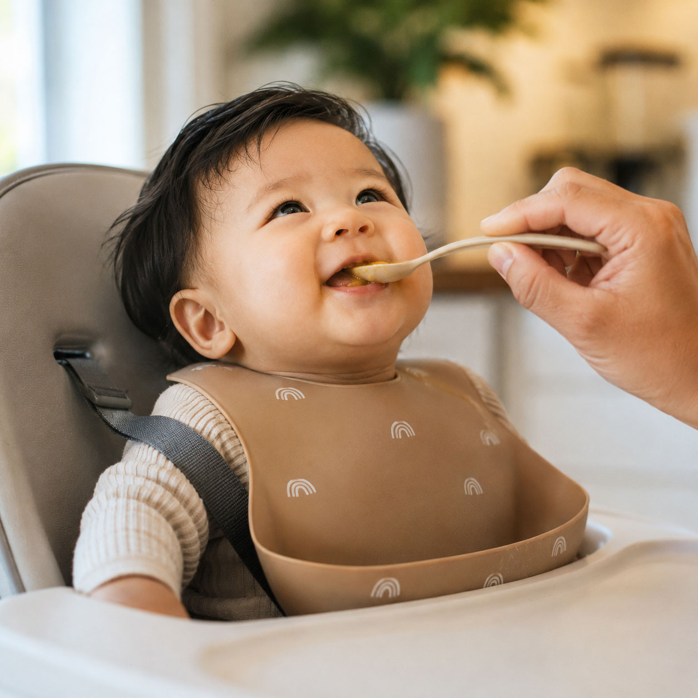
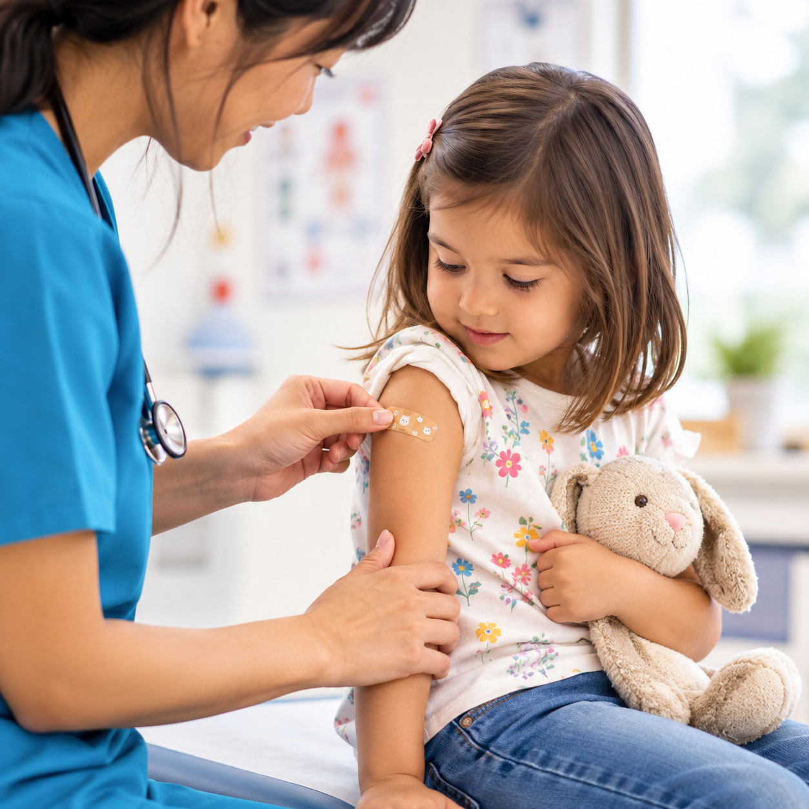
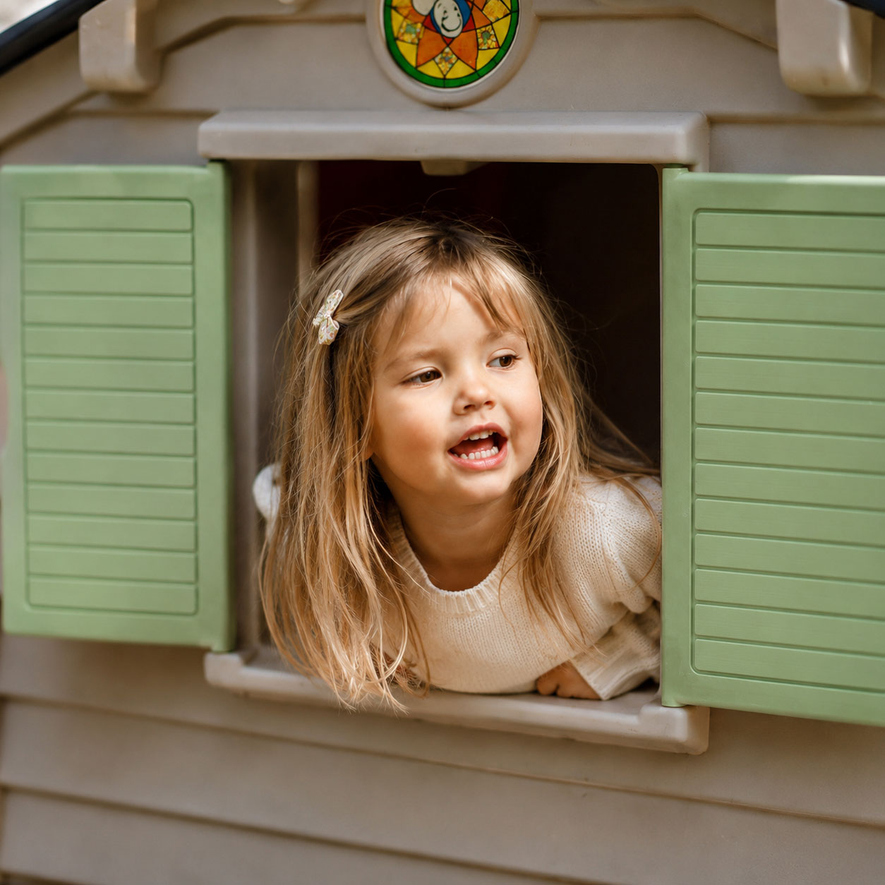

Catholic Community Services — Fostering Hope Initiative
Catholic Community Services — Fostering Hope Initiative
A confirmed FRAN community partner serving families in the Northeast Salem community.

Family resources in one place
FRAN connects Northeast Salem families with local organizations, resources, and support in one welcoming place.
Every family starts in a different place. FRAN makes it easier to connect with trusted support, community partners, and practical resources close to home in Northeast Salem.
Welcome to FRAN
Whether you are looking for family support, health resources, housing help, early learning, or community connections, FRAN can help you find a local starting point.
Find support with FRAN
Select a provider to learn more about available services and connect directly with that organization.
A confirmed FRAN community partner serving families in the Northeast Salem community.
A confirmed FRAN community partner serving families in the Northeast Salem community.
A confirmed FRAN community partner serving families in the Northeast Salem community.
A confirmed FRAN community partner serving families in the Northeast Salem community.
A confirmed FRAN community partner serving families in the Northeast Salem community.
A confirmed FRAN community partner serving families in the Northeast Salem community.
A confirmed FRAN community partner serving families in the Northeast Salem community.
A confirmed FRAN community partner serving families in the Northeast Salem community.
More community partners will be added as FRAN grows.
How FRAN can help
Every family’s needs are different. These service areas can help you understand where to begin.

Find food resources, nutrition support, and local programs that help families meet everyday needs.
LEARN MORE
Connect with health, dental, postpartum, and wellness resources for children and caregivers.
LEARN MORE
Learn where to turn for support with household stability, utilities, and essential needs.
LEARN MOREGet connected to people and programs that can help with questions, stress, and family challenges.
LEARN MOREExplore early education, childcare, school readiness, and child development partners.
LEARN MOREFind local organizations that can guide you toward the next helpful step.
LEARN MOREAbout FRAN
A welcoming place for Northeast Salem families.
FRAN brings families, community partners, and trusted resources together in one accessible place. Additional history and community story content will be added as it is finalized.
Contact Us
Send us an email and we’ll help point you in the right direction.
Email Us